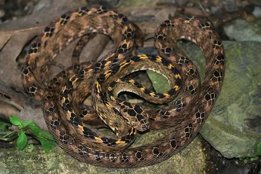
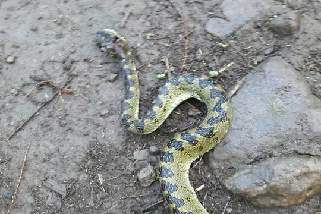
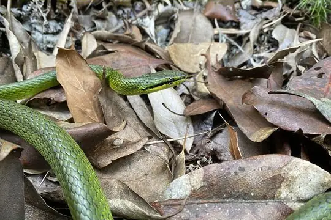
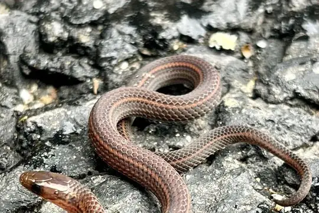
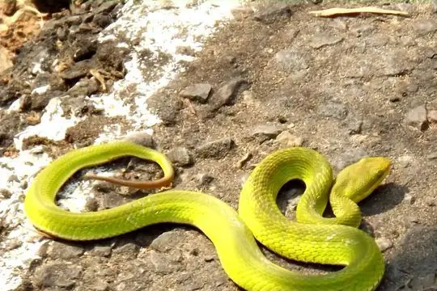
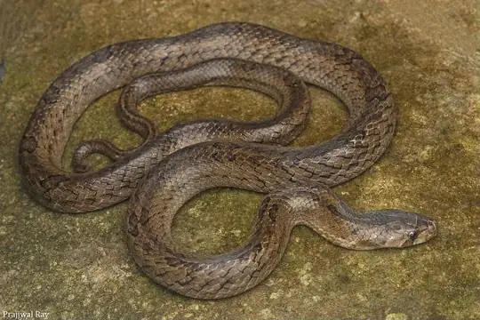
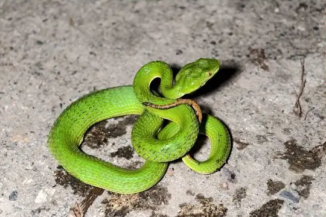

Snakes of Bhutan
73 snake species are recorded in Bhutan in SnakeList: 27 venomous and 46 non-venomous, from 6 families.
- 73species
- 27venomous
- 46non-venomous
- 6families
Species
Showing 73 species
 Ashy Kukri SnakeOligodon cinereus
Ashy Kukri SnakeOligodon cinereus
Assamese Cat SnakeBoiga quincunciata Bamboo PitviperTrimeresurus erythrurus
Bamboo PitviperTrimeresurus erythrurus Banded Wolf SnakeLycodon fasciatus
Banded Wolf SnakeLycodon fasciatus Blackbelly Worm-eating SnakeTrachischium fuscum
Blackbelly Worm-eating SnakeTrachischium fuscum Blanford's Bridal SnakeLycodon davisonii
Blanford's Bridal SnakeLycodon davisonii Brown Trapezoid SnakeSmithophis bicolor
Brown Trapezoid SnakeSmithophis bicolor Burmese PythonPython bivittatus
Burmese PythonPython bivittatus Cantor's Kukri SnakeOligodon cyclurus
Cantor's Kukri SnakeOligodon cyclurus Cantor’s black-headed snakeSibynophis sagittarius
Cantor’s black-headed snakeSibynophis sagittarius Cave RacerElaphe taeniura
Cave RacerElaphe taeniura Chequered KeelbackFowlea piscator
Chequered KeelbackFowlea piscator Chinese Kukri SnakeOligodon chinensis
Chinese Kukri SnakeOligodon chinensis Chinese Mountain Pit ViperOvophis monticola
Chinese Mountain Pit ViperOvophis monticola Collared Reed Snake (pavimentata)Calamaria pavimentata
Collared Reed Snake (pavimentata)Calamaria pavimentata Common Many-tooth SnakeSibynophis collaris
Common Many-tooth SnakeSibynophis collaris Common Slug SnakePareas monticola
Common Slug SnakePareas monticola Common Wolf Snake (aulicus)Lycodon aulicus
Common Wolf Snake (aulicus)Lycodon aulicus Daudin's BronzebackDendrelaphis tristis
Daudin's BronzebackDendrelaphis tristis Diard's BlindsnakeArgyrophis diardii
Diard's BlindsnakeArgyrophis diardii Eastern bronzeback tree snakeDendrelaphis proarchos
Eastern bronzeback tree snakeDendrelaphis proarchos Eastern Cat SnakeBoiga gocool
Eastern Cat SnakeBoiga gocool Eastern Trinket SnakeElaphe cantoris
Eastern Trinket SnakeElaphe cantoris English common name not availableElaphe hodgsoni
English common name not availableElaphe hodgsoni Gammie's Wolf SnakeLycodon gammiei
Gammie's Wolf SnakeLycodon gammiei Golden Flying SnakeChrysopelea ornata
Golden Flying SnakeChrysopelea ornata Gray Cat SnakeBoiga siamensis
Gray Cat SnakeBoiga siamensis Gray's Kukri SnakeOligodon dorsalis
Gray's Kukri SnakeOligodon dorsalis Greater Black KraitBungarus niger
Greater Black KraitBungarus niger Green Rat Snake (nigromarginata)Ptyas nigromarginata
Green Rat Snake (nigromarginata)Ptyas nigromarginata Green Trinket SnakeGonyosoma prasinum
Green Trinket SnakeGonyosoma prasinum Green Vine Snake (nasuta)Ahaetulla nasuta
Green Vine Snake (nasuta)Ahaetulla nasuta Habu Pit ViperProtobothrops himalayanus
Habu Pit ViperProtobothrops himalayanus Himalayan KeelbackHerpetoreas platyceps
Himalayan KeelbackHerpetoreas platyceps Indian CobraNaja naja
Indian CobraNaja naja Indian Rock PythonPython molurus
Indian Rock PythonPython molurus Jerdon's PitviperProtobothrops jerdonii
Jerdon's PitviperProtobothrops jerdonii- No photo yetJerdon's Worm SnakeIndotyphlops jerdoni

Kaulback's Lance-headed PitviperProtobothrops kaulbacki
Khasi Hills Trinket SnakeGonyosoma frenatum King CobraOphiophagus hannah
King CobraOphiophagus hannah Lesser Black KraitBungarus lividus
Lesser Black KraitBungarus lividus Light-barred Kukri SnakeOligodon albocinctus
Light-barred Kukri SnakeOligodon albocinctus MacLelland's Coral SnakeSinomicrurus macclellandi
MacLelland's Coral SnakeSinomicrurus macclellandi Many-banded Tree SnakeBoiga multifasciata
Many-banded Tree SnakeBoiga multifasciata Monocled CobraNaja kaouthia
Monocled CobraNaja kaouthia
Mountain Worm-eating SnakeTrachischium monticola Nepal PitviperTrimeresurus septentrionalis
Nepal PitviperTrimeresurus septentrionalis Northeastern Hill KraitBungarus bungaroides
Northeastern Hill KraitBungarus bungaroides Northern Red-necked KeelbackRhabdophis helleri
Northern Red-necked KeelbackRhabdophis helleri Olive Oriental Slender SnakeTrachischium laeve
Olive Oriental Slender SnakeTrachischium laeve Orange-collared KeelbackRhabdophis himalayanus
Orange-collared KeelbackRhabdophis himalayanus Pope's Bamboo Pit ViperTrimeresurus popeiorum
Pope's Bamboo Pit ViperTrimeresurus popeiorum Red Bamboo SnakeOreocryptophis porphyraceus
Red Bamboo SnakeOreocryptophis porphyraceus Rosebelly Worm-eating SnakeTrachischium guentheri
Rosebelly Worm-eating SnakeTrachischium guentheri Russell's ViperDaboia russelii
Russell's ViperDaboia russelii
Salazar's Pit ViperTrimeresurus salazar Sikkim KeelbackHerpetoreas sieboldii
Sikkim KeelbackHerpetoreas sieboldii St. John's KeelbackFowlea sanctijohannis
St. John's KeelbackFowlea sanctijohannis Stoliczk's Tawny Cat SnakeBoiga stoliczkae
Stoliczk's Tawny Cat SnakeBoiga stoliczkae Tibetan Pit ViperTrimeresurus tibetanus
Tibetan Pit ViperTrimeresurus tibetanus Trinket SnakeCoelognathus helena
Trinket SnakeCoelognathus helena Twin-spotted Wolf SnakeLycodon jara
Twin-spotted Wolf SnakeLycodon jara Wall's BronzebackDendrelaphis cyanochloris
Wall's BronzebackDendrelaphis cyanochloris Wall's Sind KraitBungarus walli
Wall's Sind KraitBungarus walli
Walnut Kukri SnakeOligodon juglandifer White-banded Wolf SnakeLycodon septentrionalis
White-banded Wolf SnakeLycodon septentrionalis White-lipped PitviperTrimeresurus albolabris
White-lipped PitviperTrimeresurus albolabris Yellowbelly Worm-eating SnakeTrachischium tenuiceps
Yellowbelly Worm-eating SnakeTrachischium tenuiceps Yunnan keelbackHebius clerki
Yunnan keelbackHebius clerki- No photo yetYunnan KeelbackHebius parallelum

Yunnan Pit ViperTrimeresurus yunnanensis Zaw's Wolf SnakeLycodon zawi
Zaw's Wolf SnakeLycodon zawi
No snakes in Bhutan match.
Bhutan’s snakes in numbers
- Families: Colubridae 48, Viperidae 12, Elapidae 8, Pythonidae 2, Typhlopidae 2, Pareidae 1.